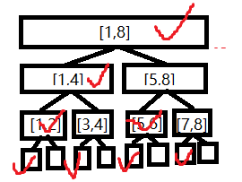

树状数组
Background
有一个数组 \(a\)，要求支持两种操作：
- 在第 \(i\) 个位置 \(a[i]\) 上加 \(x\)（单点修改）；
- 查询 \(\sum_{i=1}^{r}a[i]\)（区间查询，很容易推广到 \([l,r]\)）。
暴力可以实现 \(O(1)\) 单点修改，\(O(n)\) 区间查询。如果使用前缀和，可以实现 \(O(n)\) 单点修改 \(O(1)\) 查询。这两种方法都不够优秀。
用线段树当然可以实现，但是，有一种更好写、码量更小、常数更小、空间更少的数据结构——树状数组。
lowbit
在介绍树状数组前，我们先来了解一下前置芝士—— \(\text{lowbit}\)。
Definition（lowbit） \(\text{lowbit}(x)(x\in\mathbb N^{+})\) 表示 \(x\) 在二进制下的最低位的 \(1\) 与后面的所有 \(0\) 所构成的数值。
举个栗子，\(\text{lowbit}((24)_{10})=\text{lowbit}((11000)_{2})=(1000)_{2}\)。
我们很快可以得到一个很 low 的方法计算 \(\text{lowbit}\)。
有没有更快的方法呢？显然是有的。 设 \(n=\log(\text{lowbit(x)})\)，代表 \(x\) 末尾有几个 \(0\)。~x 表示 \(x\) 的每一位都取反，因此 ~x 末尾就有 \(n\) 个 \(1\)。~x+1 的末尾 \(n+1\) 位就是 \(1\underbrace{0\cdots 0}_{n\text{ 个 }0}\)，与 \(x\) 的末尾 \(n+1\) 位恰好相同，而其他位 \(x\) 与 ~x 都恰好相反。因此 \(\text{lowbit}(x)=(\sim x+1) \& x\)
实际上，由于 \(\sim x+x=2^{32}-1\)，可以得到 \(\sim x+1=2^{32}-x\)，由于自然溢出（本质上就是对 \(2^{32}\) 取模），得到 \(\sim x+1=-x\)。由此得到另一种写法。
Fenwick Tree
树状数组，其实就是用 \(s[i]\) 存储 \([i-\text{lowbit}(i)+1,i]\) 之间的数据之和。因此，很容易写出求和操作的代码。
举个栗子，\([1,26]\) 的区间划分过程就是 \([(1)_{2},(11010)_{2}]=[(11001)_{2},(11010)_{2}]\cup[(10001)_{2},(11000)_{2}]\cup[(1)_{2},(10000)_{2}]\)， 对应着 \(sum([1,26])=s[(11010)_{2}]+s[(11000)_{2}]+s[(10000)_{2}]\)。
单点修改又当如何？先给出结果：从 \(i=i_0\) 开始，不断加上 \(\text{lowbit}(i)\) 以获得下一个需要修改的位置。
\(s[j]\) 需要被修改当且仅当 \(j-\text{lowbit}(j)< i\leq j\)。首先需要修改的就是 \(s[i]\)，那么其他还有哪些需要修改？仔细分析一下可以发现，\(j-\text{lowbit}(j)\) 与 \(j\) 唯一的差别是从低到高数第 \(t\) 位（\(2^t=\text{lowbit}(j)\)），前者这一位为 \(0\)，后者为 \(1\)。因此，它们比第 \(t\) 位高的位都应该和 \(i\) 一样，并且 \(i\) 的低 \(t\) 位不能全为 \(0\)。而上面所说方法恰好可以获得所有满足这种条件的 \(i\)。（我也知道这里说得很模糊 XD 以后再改改）
Relationship with Segment Tree
常有人说，树状数组实际上就是砍掉一半的线段树。为什么这么说？不失一般性地，设 \(n=2^k\)。
下面是一棵 \([1,2^3]\) 的线段树，其中打钩的结点是树状数组中存储的数据。

可以看出，树状数组只存储了所有左儿子（包括根结点）的数据。那么，为什么存储这些结点的数据就够了呢？
在线段树查询 \([1,r]\) 的时候，我们从根结点 \([1,n=2^3]\) 出发，可以分成三种情况：
- 若 \([1,r]\) 完全包含了当前结点存储的区间（当前是 \([1,n=2^3]\)），那么我们已经得到了结果；
- 若 \([1,r]\) 完全包含了左儿子的区间（当前是 \([1,\frac n2=2^2]\)），那么左儿子的数据加上右子树中落在 \([1,r]\) 中的数据之和（递归求解）就是结果，这个过程中我们没有用到右儿子的数据；
- 若左儿子的区间不完全在 \([1,r]\) 内，那么左子树中落在 \([1,r]\) 中的数据之和（递归求解）就是结果。
注意到，这三种情况都没有用到所有右儿子的数据。这说明如果只需要求前缀和，总共 \(2n-1\) 个结点有 \(n-1\) 个结点是没有用的，只存储剩下 \(n\) 个结点已经完全够了——这就是树状数组，树状数组 \(s[i]\) 存的就是线段树中第 \(i\) 个叶子结点的最近有用的祖先（最近的打钩的结点）所存储的数据。（从另外一方面看，线段树种有用结点代表区间 \([l,r]\) 的右边界 \(r\)，即对应着树状数组中的 \(s[r]\)）
对于线段树中第 \(i\) 个叶子结点，根结点到它的路径可以表示为 \(i-1\) 的二进制表示（\(0\) 表示向左，\(1\) 表示向右）。例如，对于第 \(6\) 个结点，\((6-1)_{10}=(101)_{2}\)，而从根结点到第 \(6\) 个叶子结点的路径就是右、左、右。第 \(i\) 个叶子结点的最近有用祖先，一定是根结点或者它的父亲结点的左儿子，并且从它出发一直往右走可以到达第 \(i\) 个叶子结点。因此，若 \(i-1\) 的二进制表示的末尾连续 \(1\) 的个数是 \(t\)，那么第 \(i\) 个叶子结点的 \(t\) 级祖先就是它的最近有用祖先，而 \(t=\log(\text{lowbit}(i))\)。而第 \(i\) 个叶子结点的最近有用祖先的区间长度是 \(2^t=\text{lowbit}(i)\)，并且 \(i\) 是区间的右边界，因此树状数组中 \(s[i]\) 代表的区间是 \([i-\text{lowbit}(i)+1,i]\)。
至此，我们已经实现了从线段树与树状数组的对应关系。